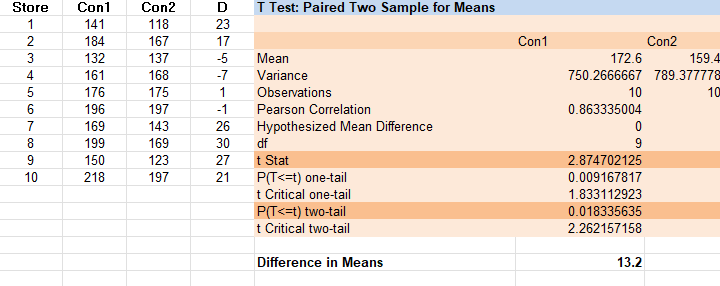
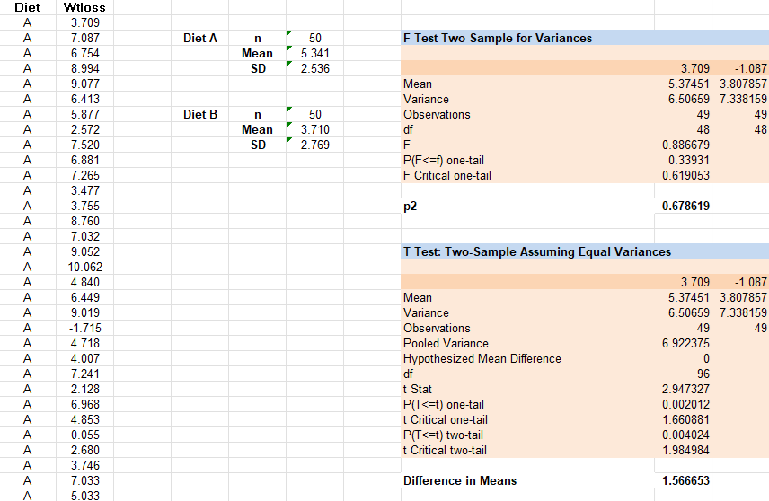

Inferential Statistics and Hypothesis Testing
Collaborative Learning Discussion 2 (Case Study: Accuracy of information)
Abi is a researcher at an institute and also a statistical programmer. Abi has received a
project from a manufacturer to review the nutritional value of a new cereal, Whizzz. Having
collected the necessary data, he now needs to perform the appropriate analyses and print the
reports for him to send to the manufacturer. Unfortunately, the data Abi has collected seems
to refute the claim that Whizzz is nutritious, and, in fact, they may indicate that Whizzz
is harmful.
Abi also realises that some other correlations could be performed that would cast Whizzz in
a more favourable light. “After all,” he thinks, “I can use statistics to support either
side of any issue.”
Question 1
Clearly, if Abi changed data values in this study he would be acting unethically. But is it any
more ethical for him to suggest analysing correct data in a way that supports two or more
different conclusions?
Answer: I would personally say that if the analysis is based on correct data
and follows known
standards, then it would still be ethical, considering that both results are presented and
published. I say this because the opposite situation, finding that is good for health and then
finding that is not good, should have the same approach.
Question 2
Is Abi obligated to present both the positive and the negative analyses?
Answer: To maintain Integrity and transparency, Abi should ethically present
both positive and negative analyses. As long as the methodology used is valid, the results
should be presented. As a good practice, negative results should be submitted for publication to
prevent publication bias and duplication that could lead to a waste of time and money (The
Embassy of Good Science, N.D.).
Question 3
Is Abi responsible for the use to which others put his program results?
Answer: As the author, is it accountable for the conduction of the research but
not for the use of the results? All funders, employers, and
researchers are accountable for providing the conditions in which individuals and organisations
are empowered and enabled to own the research process (UKRIO, 2019).
Question 4
If Abi does present both sets of results to the manufacturer, he suspects that they will
publicise only the positive ones. What other courses of action has he taken?
Answer: If he suspects that the hiring company will only publish the research
and results that support their approach, then he should present only the first one (negative).
The company may accept starting another research with different parameters that also relate to
the initial research.
Societal impact must be considered within research. Providing new knowledge can help reduce misinformation, so from this point of view, Abi has the responsibility to society to reveal his findings by publishing them. Potential physical or psychological harm, discomfort, stress or reputational risk to participants and their associates should be considered by researchers (University of Wolverhampton, N.D.). Also, not reporting something that could be harmful to consumers could be considered as negligence and could present legal implications.
References
The embassy of good science (N.D.) Non-reporting of negative findings. Available from:
https://embassy.science/wiki/Theme:24e87492-7020-4fc0-ab37-dd88bcf9f637 [Accessed 14 May
2024]
UKRIO (2019) Self-Assessment Tool for The Concordat to Support Research Integrity. Available
from:
https://ukrio.org/wp-content/uploads/UKRIO-Self-Assessment-Tool-for-The-Concordat-to-Support-Research-Integrity-V2.pdf
[Accessed 14 May 2024]
The University of Wolverhampton (N.D.) Societal impact. Available from:
https://www.google.com/url?sa=t&source=web&rct=j&opi=89978449&url=https://www.wlv.ac.uk/media/departments/research/documents/Considering-the-impact-of-research-on-society.docx&ved=2ahUKEwj7mK3X4bOGAxW3U0EAHVZUDGYQFnoECDYQAQ&usg=AOvVaw3ZC1Zub8KmZhwwEHmvxx2X
[Accessed 14 May 2024]
Hypothesis Testing Using Excel
The Related Samples T Test (Example 7.1)
Consider the container design data in Data Set F (see the Data Annexe). Notice that the two
variables
Con1 and Con 2 indeed measure the same characteristic (the number of items sold), but under
two
different “conditions” (the two different container designs).
We conduct a two-tailed related samples t test of whether the underlying (population) mean
number of
items sold differs between the two container designs

The INDEPENDENT Samples T Test (Excercise 7.2)
Consider again Data Set B, the dietary data. Not unreasonably, we wish to test whether the population mean weight loss differs between the two diets. Since separate samples of individuals undertook the two diets (i.e., no-one underwent both diets), the independent samples t test is appropriate here.

Lecture cast: Summary Measures and Inference (Notes)
Data Sets, Observations and Variables
Data sets are organised values of one or more variables of interest (data). These are normally
represented by tables of variable names vs individual observations.
A valid methodology is needed to extract meaningful conclusions from data.
Ordinal scale: The higher the score, the more attractive the product is to the respondent.
Ordinal data is often relative to ranking of a relevant attribute of interest that belong to the
product.
Nominal: Nominal values can not be ordered. For convenience, it can be re-coded as numeric, but
these values don't represent quantities.
Comparison of Levels of Measurement
Data at the higher (ratio and interval) level represent the measurement of quantity
(quantitative or metric). Data at the lower (ordinal and nominal) levels are also qualitative or
nonmetric.
Discrete and Continuous Variables
Quantitative variables that assume integer variables are called discrete.
Variables that can assume all values are called continuous
Summary measures
Two types of measures
1. Location. This is the value taken by a typical observation
2. Dispersion. Give an idea of how distributed the data is
Sample Mean and Sample Standard Deviation
This is used only for qualitative data. The median and Interquartile range are alternatives to
measuring location and dispersion, respectively.
Interference
Two forms.
1. using data to estimate underlying population value (Mean)
2. Using data to determine whether some assumptions about the underlying population is likely to
be true (hypothesis testing)
Hypothesis testing
An alternative form of inference is to use the data to provide evidence about whether some
assumption of interest regarding that population value is likely true (hypothesis
testing).
Hypothesis testing is usually preferred to the estimation approach when interest lies in
comparing the relevant values underlying two or more different populations.
Definition
Hypothesis testing is a method for testing a claim or hypothesis about a parameter in a
population using data measured in a sample. It consists of 4 steps.
1. State the Hypotheses
2. Set the Criteria for a Decision (under which criteria the claim tested is true or not)
3. Compute the Test Statistic (calculations done on a random sample)
4. Make a Decision (compare actual results to what was expected)